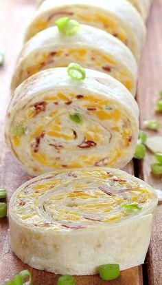

Turkey Bacon Ranch Pinwheels
Return to Homepage

Description
Quick, easy, delicious! These pinwheels are stuffed with delicious turkey, mouthwatering bacon, and homemade ranch cheese spread!
Ingredients
- 4 flour tortillas
- 8 ounces of cream cheese
- 1 1/2 tablespoons of dry Ranch seasoning
- 3/4 cup shredded cheddar cheese
- 9 ounces packaged deli turkey
- 1/2 cup cooked bacon, chopped
Instructions
- In a bowl, combine the Ranch seasoning with the cream cheese, cheddar cheese, and chopped bacon.
- Spread the cream cheese mixture on the tortilla.
- Layer the deli turkey on top of the cream cheese mixture.
- Tightly roll the tortilla and wrap in plastic wrap, then chill in the fridge for 30 minutes.
- Remove the rolled tortillas from the fridge, and slice into 1inch thick pinwheels.
- Enjoy!